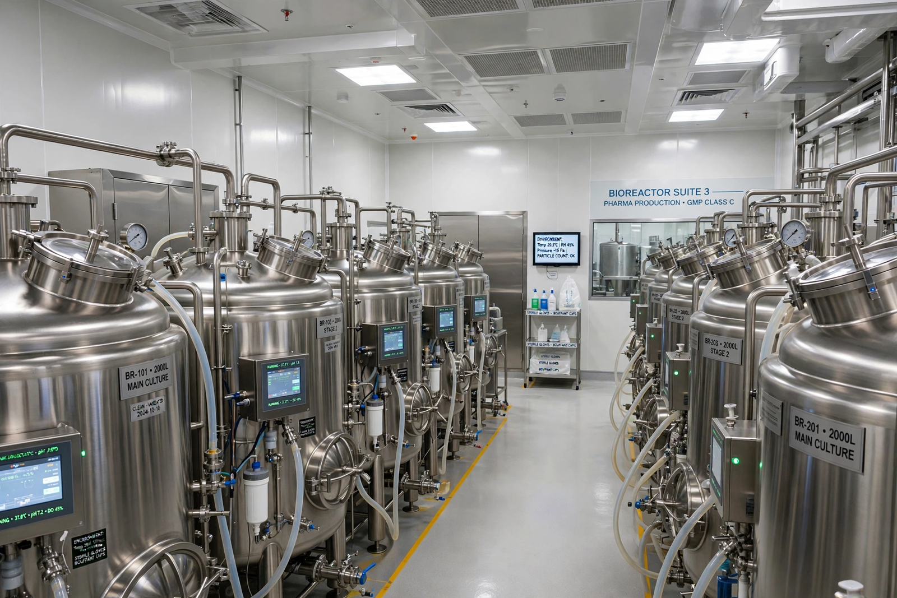

Biopharmaceutical
From Wikipedia, the free encyclopedia
| Biopharmaceutical | |
|---|---|
 | |
| Type | Pharmaceutical product manufactured in, extracted from, or semisynthesised from biological sources |
| First product | Recombinant human insulin (Humulin), approved 1982 |
| Major classes | Monoclonal antibodies, recombinant proteins, vaccines, cell and gene therapies |
A biopharmaceutical, also known as a biologic(al) medical product, or biologic, is any pharmaceutical drug product manufactured in, extracted from, or semisynthesised from biological sources. Different from chemically synthesised pharmaceuticals, they include vaccines, whole blood and its components, allergenics, somatic cells, gene therapies, tissues, recombinant therapeutic proteins, and living medicines used in cell therapy.
History
The modern era began with recombinant DNA technology: in 1982 recombinant human insulin, produced in genetically engineered Escherichia coli, became the first approved biopharmaceutical. Recombinant erythropoietin, growth hormone, and clotting factors followed. The advent of monoclonal antibody technology — foreshadowed by the 1975 hybridoma method of Köhler and Milstein — produced blockbuster therapies such as rituximab, trastuzumab and adalimumab.
Production
Biologics are grown in living systems — bacterial or yeast fermenters, or mammalian cell culture (commonly Chinese hamster ovary cells) — in bioreactors, then purified through elaborate chromatography and filtration steps. Because "the process defines the product", small changes in manufacturing can alter the final molecule, which is why follow-on products are regulated as biosimilars ("highly similar", shown to have no clinically meaningful differences) rather than as exact generics.
Classes and regulation
Major classes include monoclonal antibodies, replacement proteins and enzymes, peptide hormones, vaccines, blood factors, interferons and interleukins, antisense oligonucleotides, and advanced therapies such as CAR-T cell therapies. In the United States most biologics are licensed under the Public Health Service Act by the Food and Drug Administration; in the EU they are authorised through the European Medicines Agency. Their size, complexity and immunogenicity distinguish their pharmacology from small-molecule drugs such as those described under pharmacology.